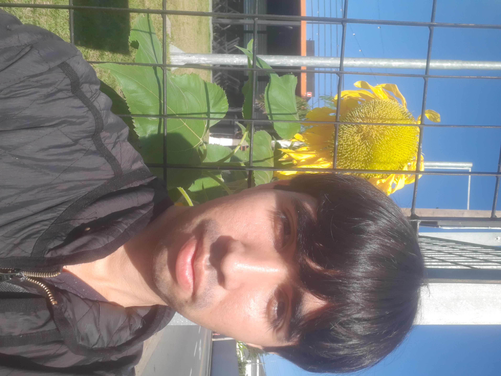
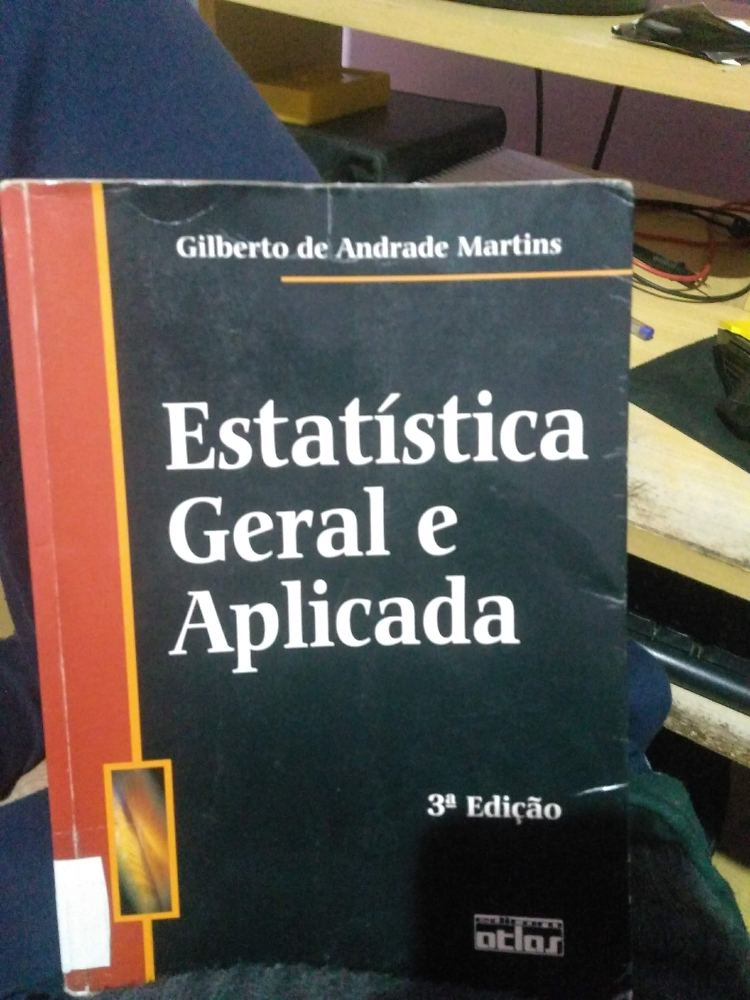
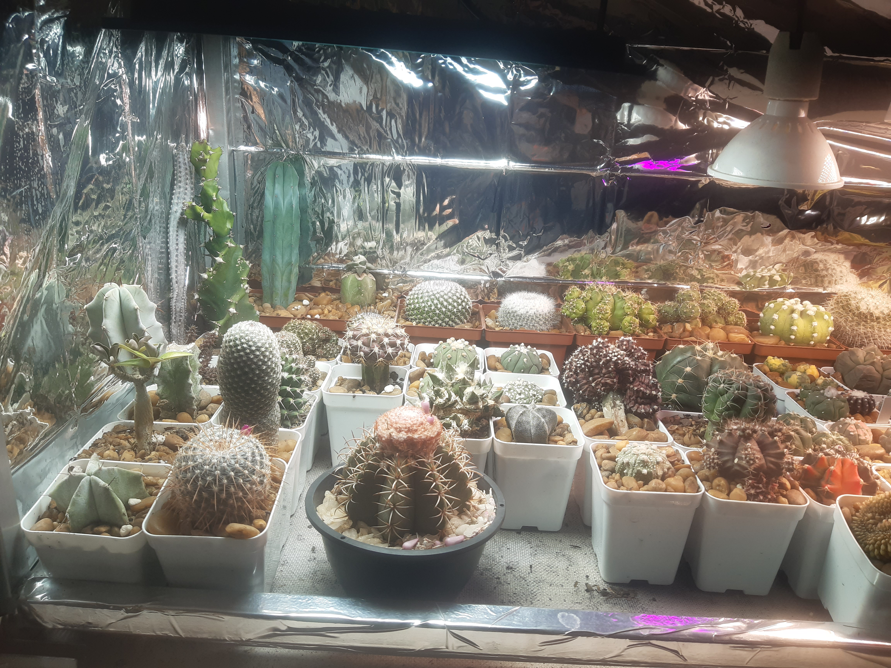
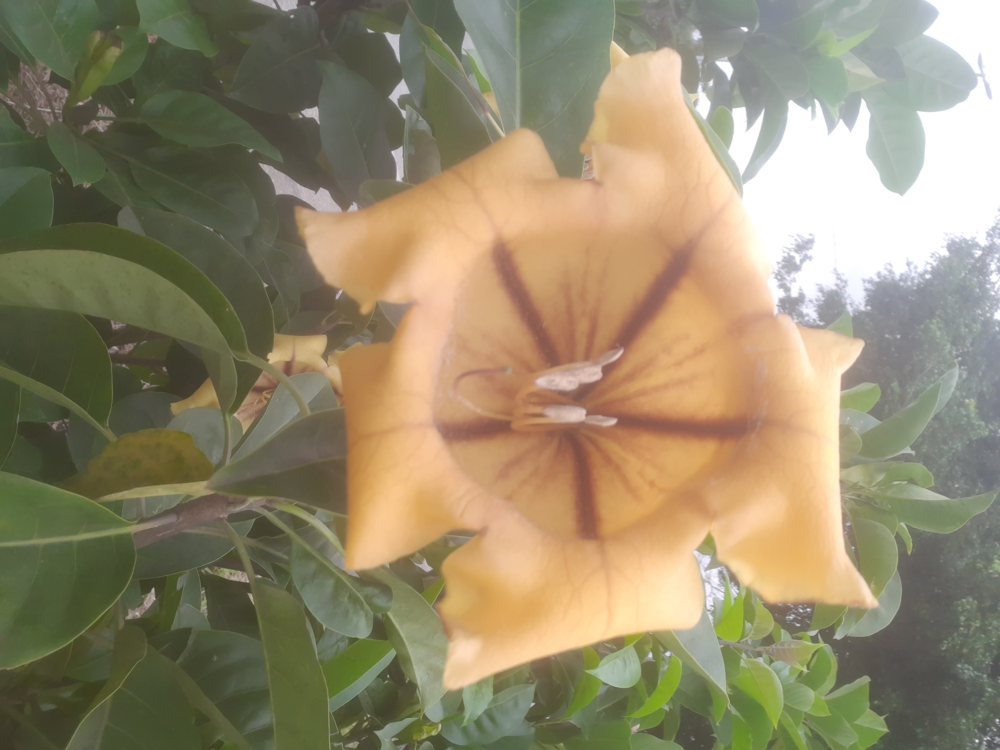
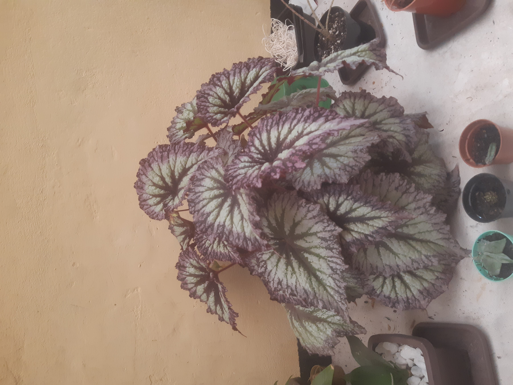

PORTFOLIO
↓ explorarUm pouco sobre mim.

Sou uma pessoa curiosa, gosto de tecnologia e estou construindo minha trajetória na área de desenvolvimento de software. Tenho buscado aprender através de projetos práticos, explorando tanto o desenvolvimento de interfaces quanto a construção de sistemas no back-end. Cada projeto é uma oportunidade para aprender algo novo, melhorar minhas habilidades e transformar conhecimento em experiência.

Hobbies.
Em meu tempo livre, eu saio para ver as plantas em ambiente externo, e na parte da manhã cuidos da estufa de que tenho e da plantas de casa.



Meus Projetos
HABILIDADES E
EXPERIENCIA
Programador
- Domínio técnico em banco de dados em MySQL e Postgres.
- Programador em TypeScript e C#.
- Domínio técnico em Backend.
- Domínio pleno em metodologia Scrum.
Outros Trabalhos
- Serralheiro autônomo.
- Domínio técnico em montagem de estruturas metálicas.
- Atendimento técnico e priorizado ao cliente.
- Ótimo no trabalho em equipe.